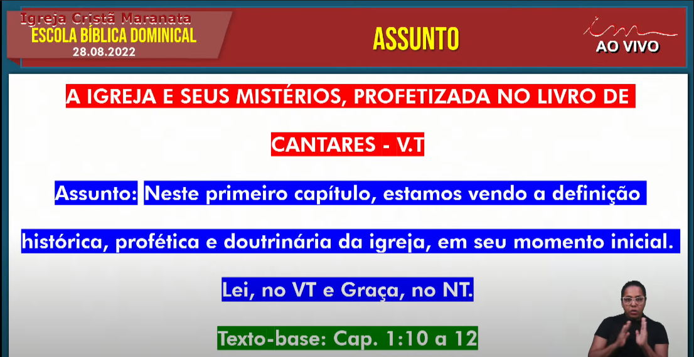
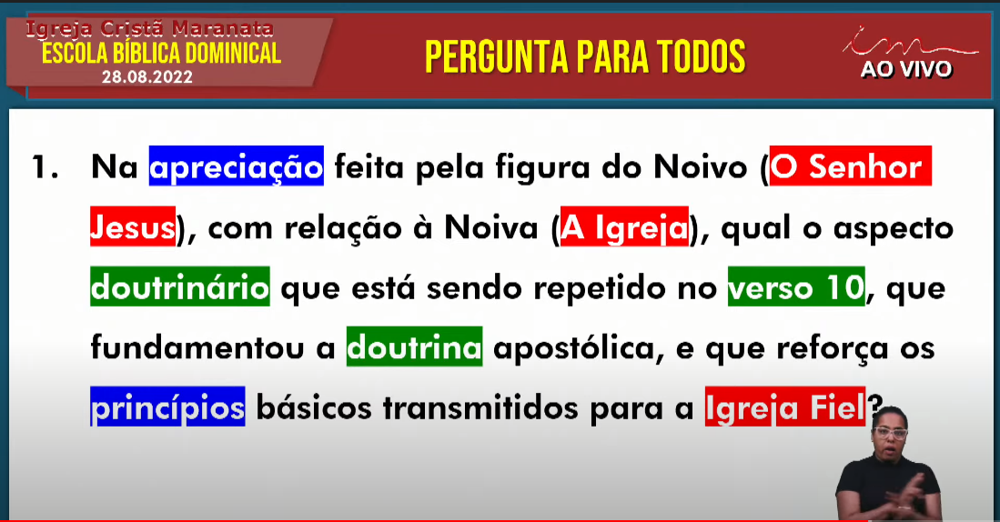
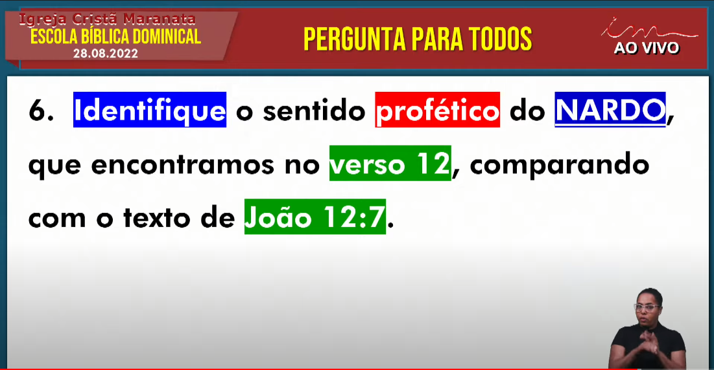
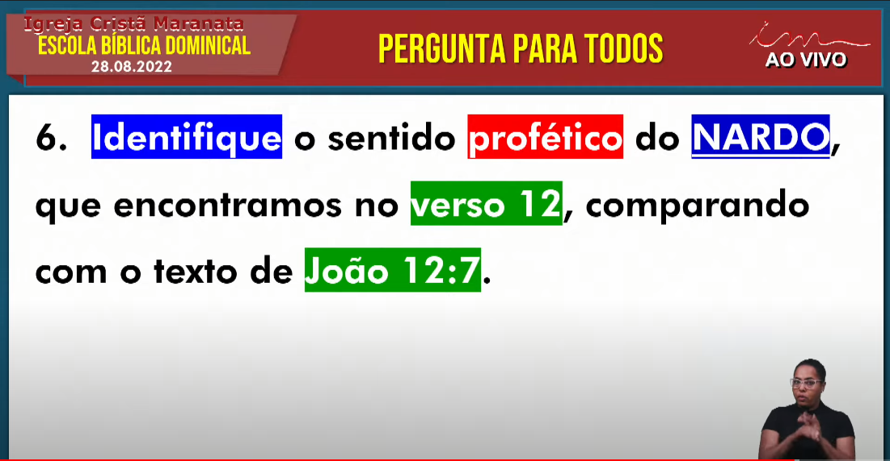
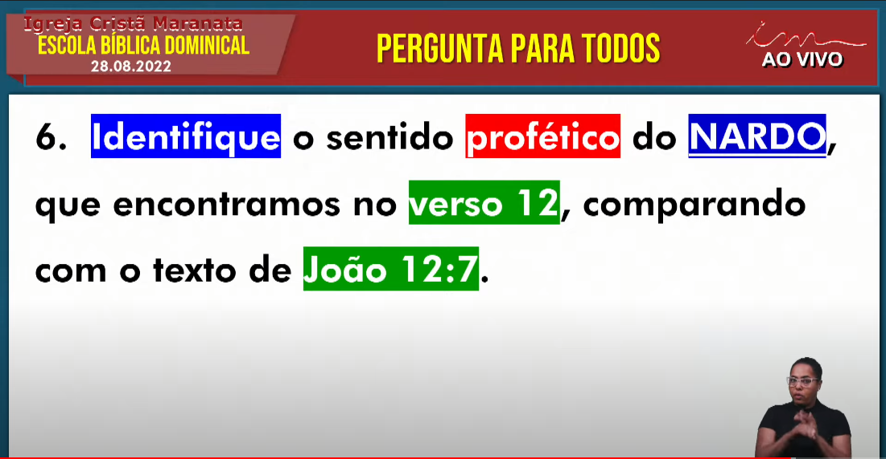
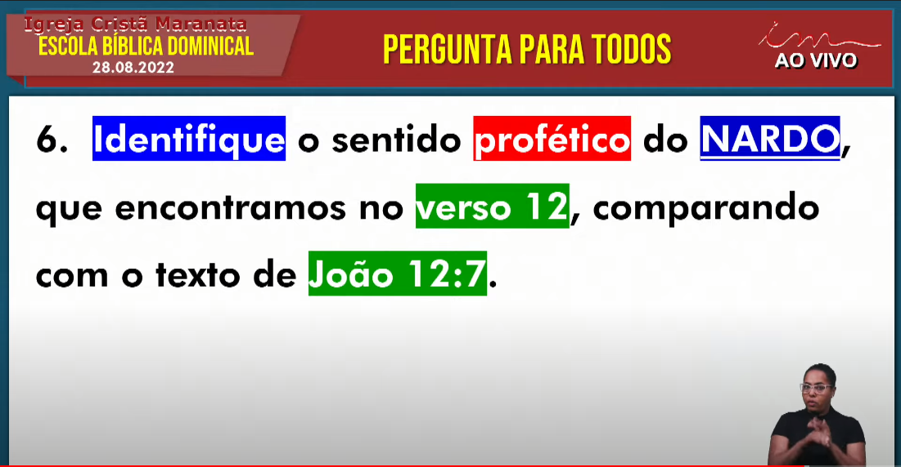
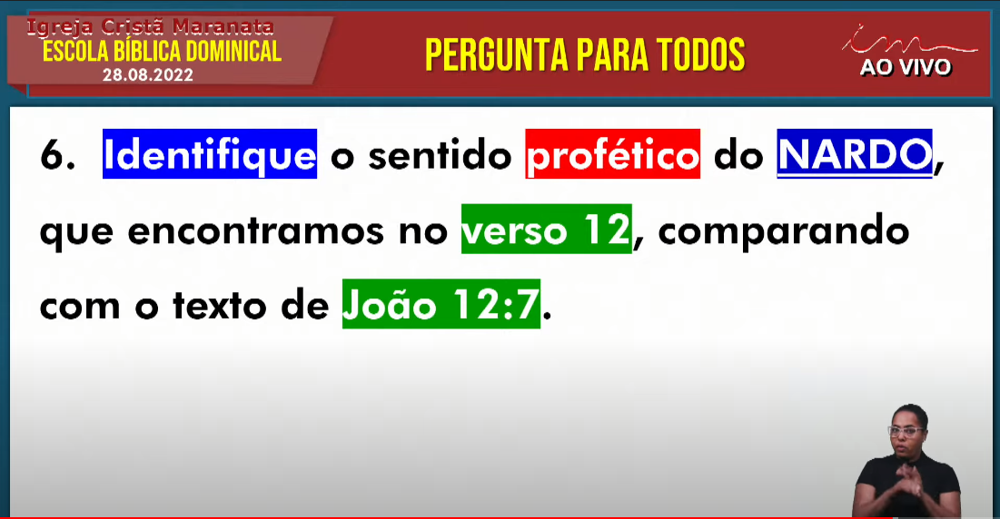

EBD 08/01/2023
Comentários
O Cristianismo se desviou tanto pois a vontade do Senhor está no evangelho de Jesus.
Sem o Espírito Santo é só Religião
Religião para o mundo de hoje é a melhor coisa que pode existir, distração
Doutrina é andar no caminho
Todo Cristão sabe o caminho, porém, andar no caminho é difícil
Nós entendemos que aquilo que foi falado, escrito, no Livro de Cantares de Salomão, está registrando a história da Igreja
Entendemos uma Somatória de Ensinos, mensagens proféticas, escritas há 3000 anos, como Salomão sendo a tipologia do Espírito Santo
Quando falamos em tipologia, falamos naquilo que os homens não erraram
O Cap 3 fala do momento profético em que estamos
A maioria das parábolas que falam sobre o reino, tratam a Igreja como a noiva, trata das bodas
Devemos aceitar Jesus pois como diz o texto: "Ninguém vem ao Pai se não por mim..."
Ninguém precisa estudar e fixar um versículo
O que existe é uma palavar profética em toda a bíblia
As Igrejas em todo o mundo estão se acabando
Perguntas EBD - 21/08
 

Envie sua participação


 



Comentários